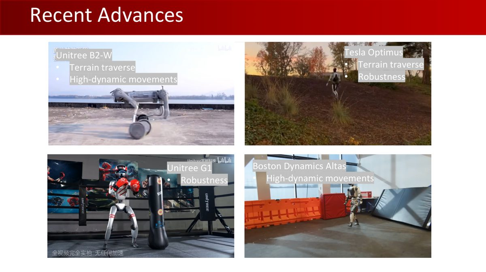
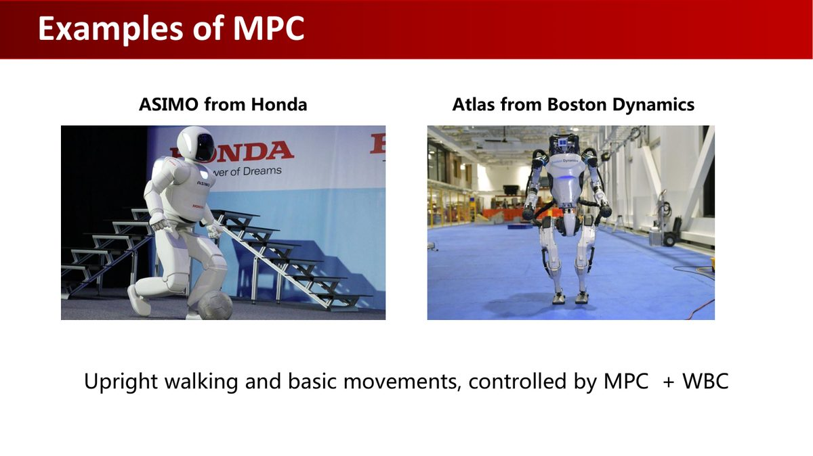
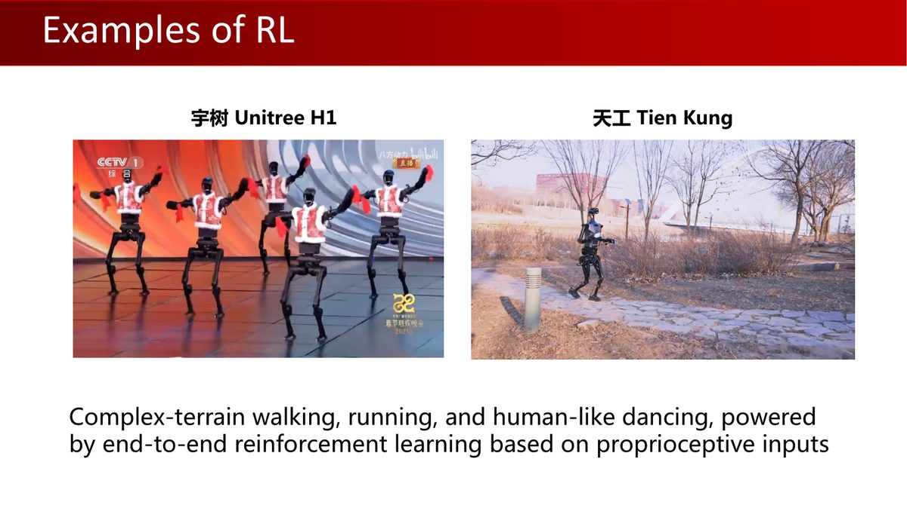
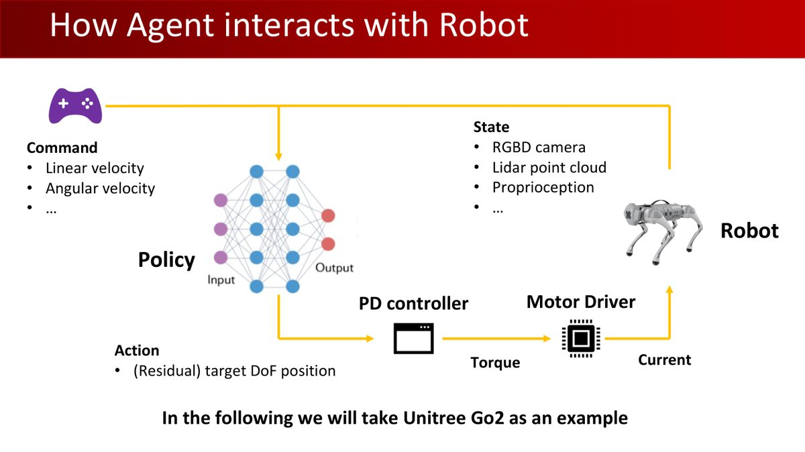
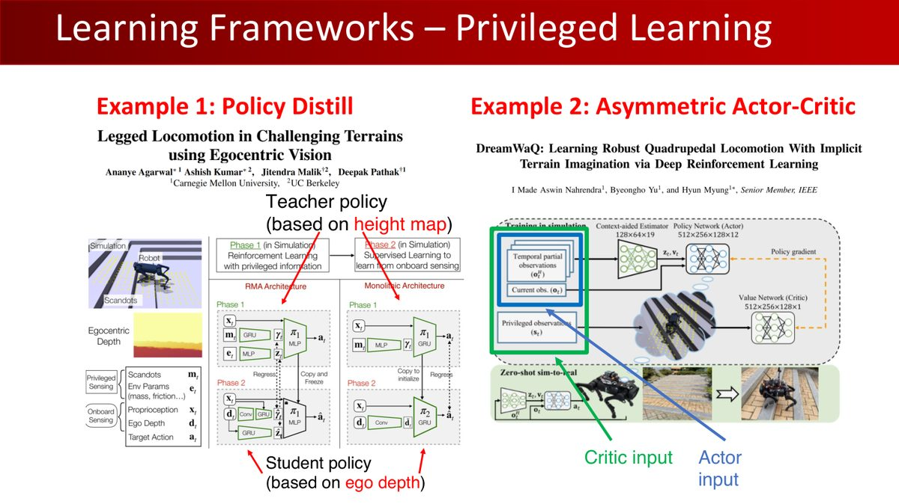
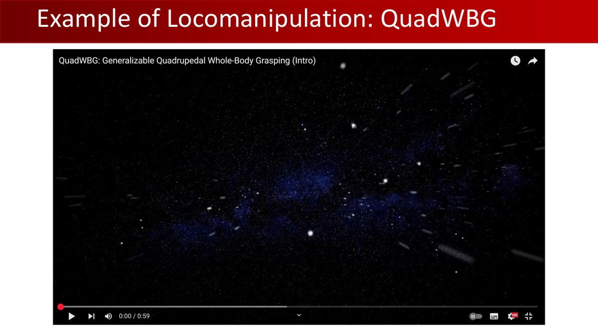
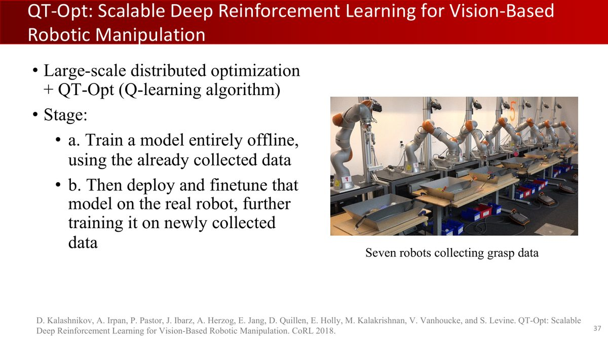
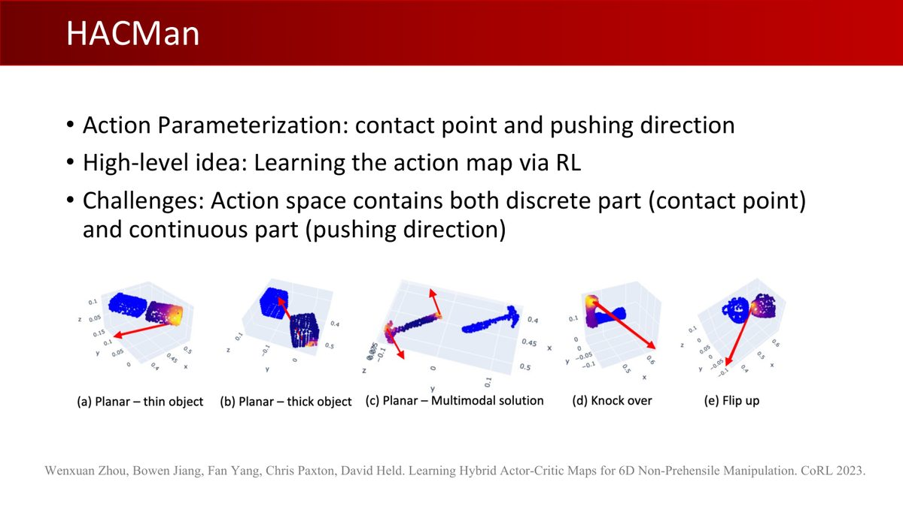
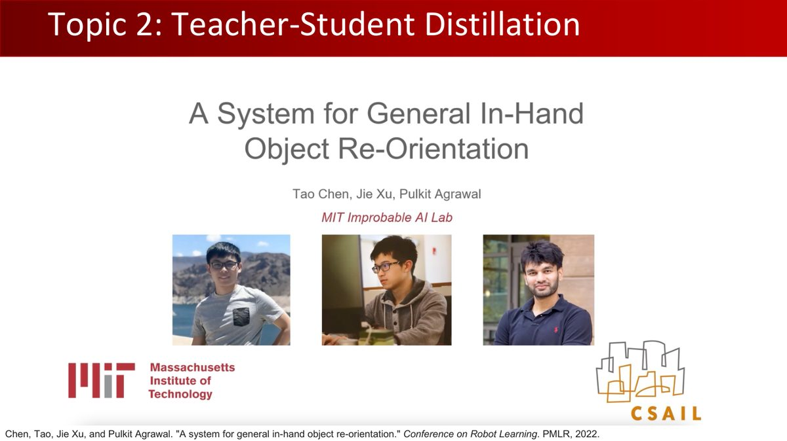
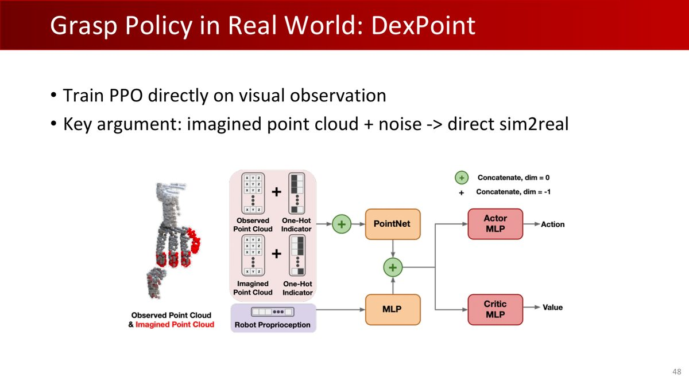

打开本章课件逐页中文翻译：保留原页码、原文与来源，可在学完一节后对照相应页面。
1机器人任务板块全景
本教程第 1 章预告过课程的四大板块：机器人学（第 2-4 章）→ 3D 视觉（第 5-7 章）→ 策略学习（第 8-9 章）→ 机器人任务（本章）。原版课程的最后四讲（Lecture 10-13）构成这个板块，本教程将其合并为一章：
| 原版课件 | 主题 | 本教程位置 |
|---|---|---|
| Lecture 10 · Policy III | AC 回顾 + Off-Policy + PPO 细节（复习课） | §2-4（融合进第 9 章知识应用） |
| Lecture 11 · Robotic Task I | Locomotion 足式运动（MPC 与 RL、MDP 设计、学习框架、QuadWBG） | §2-5 |
| Lecture 12 · Robotic Task II | 机械臂抓取 RL、非抓握操作、灵巧手 | §6-8 |
| Lecture 13 · Robotic Task III | 灵巧手前沿 + 期末项目 | §8-9 |
这四讲的共同底色是第 9 章的强化学习——现在把它装进真实机器人。前半章以足式运动介绍 PPO 的应用，后半章以操作任务说明如何结合 RL 与 IL。
2足式运动：MPC 与 RL
MPC（Model Predictive Control，模型预测控制）反复求解有限时域优化，只执行当前一段并重新规划；RL（Reinforcement Learning，强化学习）根据数据和回报学习策略；WBC（Whole-Body Control，全身控制）协调全身关节、接触与任务优先级。它们可组成同一系统，例如 RL 提供步态或参考目标，MPC 规划接触力，WBC/PD 实现执行。
比较时要对齐地形、速度指令、执行器限位、传感器和扰动范围。分析机器人展示的能力时，应查阅对应系统的算法与实验设置，再比较各路线在这些条件下的表现。
2025 年课程展示了 2024-2025 年的足式机器人进展（课件 p36）：Atlas 的高动态动作、宇树 G1 的鲁棒性、B2-W 的复杂地形、Optimus 的越野——两大流派各有代表：

| MPC（模型预测控制） | RL（强化学习） | |
|---|---|---|
| 思想 | 每步解优化问题：动力学 + 约束 + 代价 | 数据驱动学习策略，部署策略推理不必在线求解精确模型，但训练仍依赖数据或仿真条件 |
| 代表 | Atlas、ASIMO（MPC + WBC） | 宇树 H1、天工（课件展示的 RL 路线案例，本体感知输入；具体算法以对应工程为准） |
| 优势 | 自然处理约束、可解释 | 部署时策略推理快；鲁棒性取决于训练扰动与验证范围 |
| 痛点 | 接触切换、模型误差与实时求解有挑战；可用鲁棒控制、状态估计与学习模块缓解 | 奖励设计耗时；数据与构型强耦合；Sim2Real |


课件讨论 RL 在足式运动中取得进展的两个因素（p46）：足式机器人的接触与约束极难建模，会增加模型控制的设计难度，而并行仿真让 RL 的样本效率问题大幅缓解——这也是第 9 章「为何并行足式训练常采用 PPO」的答案（课件 p57）：高动态任务中 SAC/DDPG 的 Q 函数对动作变化极其尖锐、难拟合；并行仿真则减少收集新数据的墙钟时间，算法所需的样本量仍是需要考虑的成本。
3运动任务的 MDP 设计
常见残差关节位置接口：$q_{des}=q_{nom}+\Delta q$；低层 PD 输出 $\tau=K_p(q_{des}-q)+K_d(\dot q_{des}-\dot q)$。策略输出 Δq，电机实际接收的可能是经限幅的力矩或电流。q 为关节角，$\dot q$ 为角速度，Kp/Kd 为控制增益。50 Hz 策略意味着每 20 ms 更新；1000 Hz 控制意味着每 1 ms 更新，这是课程中的频率示例，实际配置由机器人与控制系统决定。
奖励和观测设计应与任务一致；仿真可提供身体全局位姿与接触参数；部署时需要明确哪些量由传感器测得，哪些量需要估计。观测不足时模型仍可视为 POMDP，用状态估计或历史处理。

State：本体感知 + 外感受
- Proprioception：IMU（惯性测量单元，通常包含加速度计与陀螺仪；部分系统另用磁力计辅助朝向估计，环境磁干扰需处理）、关节角度与速度；
- Exteroception（可选）：激光雷达点云、RGBD 相机；
- 身体状态的两种表征：关节空间（12 关节的角度+角速度——低维、与动作空间对齐，但不含浮动基座的世界位姿）vs 连杆空间（各连杆位姿、速度、角速度——高维但更全）。
Action：三种控制接口
| 接口 | 说明 | 特点 |
|---|---|---|
| 位置 PD 控制 | 输出残差目标关节位置 | 运动任务最常用：策略可低频更新（50Hz），PD 高频输出力矩（1000Hz） |
| 速度 PD 控制 | 输出目标速度 | 同上思路 |
| 力矩控制 | 直接输出力矩 | 最灵活，训练更难 |
Reward：没有通用配方
课件直言：「目前没有通用规则定义奖励函数，调每个项的系数极其耗时」。奖励分两类：任务奖励（如速度跟踪）与正则化奖励（压制不良运动，如关节力矩惩罚、动作平滑）。缓解调参痛苦的办法：参考轨迹相关奖励（motion tracking，如 loco-mujoco 代码库）——用参考运动引导奖励设计。
仿真器（课件 p56）：Isaac 系列（Isaac Gym → Isaac Sim → Isaac Lab）与 MuJoCo 系列（MuJoCo-Playground）。
4四个学习框架
训练与部署的信息边界：教师、评论家可使用仿真地形真值、接触力或精确速度；部署学生/演员只能依赖其实际传感器与估计结果。策略蒸馏是把教师行为作为学生监督信号；非对称 Actor-Critic 是在同一训练过程中给价值网络更多信息，这两种训练方式都为学习提供额外信息，最终策略根据部署可用的观测或历史作出决策。蒸馏本身无法补足不可辨识的状态。
4.1 课程学习（Curriculum Learning）
从易到难逐步加难度：地形穿越（先平地后起伏）→ 避障（先稀疏后密集）→ 快速移动（速度逐级提升）。课程案例用这种方式提升训练效果。安排难度时，应观察当前任务的学习进度，逐步提高难度，并检查目标分布变化对训练的影响。
4.2 层级学习（Hierarchical Learning）
技能库（Skill Library）：高层策略选择/组合底层技能（如视觉地形穿越 = 行走技能 + 视觉感知）。
4.3 特权学习（Privileged Learning）

为什么特权信息重要？课件用跳沟作比喻：「狗跳过沟壑时，仅凭本体感知其实不知道自己在哪里」——线速度、基座高度这些信息对决策至关重要，却难以从本体感知精确获得。两种用法：Policy Distill（教师策略用特权信息训练，蒸馏到只看观测的学生）与Asymmetric Actor-Critic（Actor 只看观测、Critic 用特权信息），对应第 8 章「教师策略」思想在足式运动中的应用。
4.4 端到端学习
PPO + 并行仿真直接训练（第 9 章配方）。视觉输入的端到端 RL（本体感知 + 时序深度图）也已能做到室内外真机部署（课件 p74-76）。
5QuadWBG 与双足机器人
课程组自己的工作 QuadWBG（四足全身控制）：把第 5-7 章的感知与本章的运动控制组合成完整系统（课件 p63-68）：

- 运动：5D 命令（线速度 x/y、偏航速度、高度、俯仰），训练时随机化末端位姿实现「全身意识」；
- 感知：现成模块——Xmen 做目标跟踪、ASGrasp（第 7 章）做抓取检测；
- 操作：差分 IK + 在线规划——连续平滑、适应意外运动；参数化跟踪球（减少运动模糊、降低跟踪丢失）；基于可达性的运动规划；
- 高层规划器：观测（目标位姿、重力、关节位置、上一步动作）→ 动作（基座高度/俯仰/线速度/偏航）——RL 高层 + 低层控制器。
从四足到双足（课件 p77-81）的关键差异：结构上重心更高、自由度更大、足部接触建模复杂；学习上可引入参考运动模仿（Imitation with Reference Motion）——人类的动捕数据提供「怎么动像人」的先验，这是一种利用参考运动构造训练目标的路线；具体系统是否采用它需查对应工程。
MPC、规划、参考运动模仿与 RL 可承担不同环节，是否组合取决于状态信息、控制接口和任务要求。评估足式运动方法时，先明确速度跟踪、稳定性、能耗与地形条件，并根据这些指标比较各方法的技术表现。
6机械臂抓取 RL：QT-Opt 与 GA-DDPG
把缩写展开：GAIL（Generative Adversarial Imitation Learning）是生成对抗模仿学习，用判别信号引导匹配专家状态—动作分布，学到的奖励信号可能有多种等价形式；DDPG（Deep Deterministic Policy Gradient）是深度确定性策略梯度，使用确定性演员、Q 评论家和经验回放；BC 是行为克隆，DAgger 是数据集聚合。Replay Buffer=经验回放缓存，Bellman update=贝尔曼更新。
抓取也能用 RL 学（Lecture 12）。课件介绍三类代表性工作：
6.1 Reward-Consistent Demonstration + GAIL（阶段式 RL 抓取）
把 6 DoF 抓取拆成连续阶段（定向末端 → 接近目标 → 闭合夹爪），每阶段单独训一个 RL 模型；用 GAIL（生成对抗模仿学习）从演示学习奖励，PPO 训练——缓解「阶段式奖励难设计」的问题。
6.2 QT-Opt：大规模分布式 Q-Learning（Google）

用 7 台真实机械臂收集 58 万次抓取尝试，视觉输入直接学 Q 函数——早期「视觉 RL 抓取」的里程碑。
6.3 GA-DDPG：目标辅助的 Actor-Critic（CoRL 2021）
GA-DDPG 的闭环 6D 抓取策略组合了：DDPG（Actor 学策略、Critic 拟 Q、Replay Buffer）+ BC/DAGGER 热启动 + Goal-Auxiliary（把演示目标轨迹作为辅助监督）。这个组合展示了如何利用演示降低探索难度，再用任务回报继续优化。理解它时，可以分别看演示监督、目标辅助和回报优化承担的作用。
7非抓握操作：推的学问
直观例子：桌上硬币太薄，夹爪难从平面直接夹起，可以先把它推到桌沿再抓。非抓握阶段没有持续夹紧物体，物体运动对接触点、方向、桌面摩擦和碰撞很敏感。HACMan 将“推哪里”与“怎样推”分开建模，以免对离散候选接触点直接取无效平均。OSC（Operational Space Control）是操作空间控制。
第 5 章介绍过，物体操作还可以通过推、拨等接触力学调整物体状态，这类方法称为非抓握操作（Lecture 12 p47-55）：
- 平面非抓握操作（IROS 2023）：参数化 $(x,y,\theta) \to (x,y,v_x,v_y)$，RL 学推东西；
- 外源性灵巧（Extrinsic Dexterity）（CoRL 2022）：利用环境帮助抓取——把抓不起来的物体推到墙边、桌边，借助外部接触实现抓取（goal-conditioned RL + OSC 控制）；
- 任务规划式非抓握：参数化力-速度控制器技能 + 感知 + 任务规划（局限：已知实例的预定义技能）；
- HACMan（CoRL 2023）：视觉策略、未见物体泛化、6D 任意稳定目标位姿——动作参数化为接触点（离散）+ 推动方向（连续），用 Hybrid Actor-Critic 处理混合动作空间。

HACMan 的优势：跨未见物体泛化；局限：依赖运动原语（不连续平滑）、对桌面摩擦系数变化不鲁棒。后续工作（ICLR 2024 / arXiv 2025）走向闭环非抓握策略。
8灵巧操作：三大挑战与解法
从抓取到手内操作：抓取生成预测可行初始手—物体姿态，抓取策略控制接近、接触和抬起，手内重定向在保持接触过程中连续改变物体朝向。三个阶段的输入、奖励和失败判据不同；评估时，应分别验证生成姿态的可行性与接近、接触、抬起等动态执行过程。DAPG（Demonstration-Augmented Policy Gradient）是演示增强策略梯度，在策略更新中结合演示与环境回报信号。
灵巧手有潜力完成高维手内操作及其他复杂操作（抓取、重定位、手内操作、工具使用——锤子、剪刀……）。这些任务使 RL 面临更突出的三类困难（课件 p61-65）：
| 挑战 | 内容 | 解法 |
|---|---|---|
| 1. 样本低效 | 20-30 DoF 高维动作空间，RL 直接训极慢 | RL + 模仿学习（DAPG） |
| 2. 视觉观测 | >1000 维、部分可观测；小 backbone 容量不足、大 backbone 难优化 | 教师-学生蒸馏 |
| 3. Sim2Real Gap | 真机直训不可负担；接触密集任务仿真难精确 | 域随机化、Model-based RL |
DAPG：PG + 模仿的融合（Rajeswaran et al. 2017）
在本节展示的复杂灵巧任务中，直接 RL 的探索成本高，有限数据 BC 的闭环泛化困难；演示与回报优化结合是针对这些困难的一种方案。DAPG（Demo-Augmented Policy Gradient）把演示梯度加进策略梯度：既保留演示的「方向感」，又允许 RL 超越演示。效果：更类人的动作质量 + 对环境扰动更鲁棒——这与第 9 章讨论的「BC 热启动 + RL 微调」思路相联系。
教师-学生蒸馏（Chen et al., CoRL 2022）

状态型 RL 教师（真状态训练）→ 蒸馏到视觉型学生（只看 RGB-D）——手从朝上翻到朝下的物体重定向也能完成。
灵巧抓取的其他路线（Lecture 13）
- 抓取生成：UniDexGrasp（CVPR 2023）——$p(R,t,q|X)$ 分解为「旋转扩散 + 平移/手型条件生成」，解决多样抓取生成的模式坍缩；
- 仿真抓取策略：UniDexGrasp++（ICCV 2023）——几何感知迭代通才-专才学习（课程），研究新物体泛化；具体成功率须结合原实验设置；
- 真机路线：ISAGrasp（人手抓取数据重定向 + 数据增强）、DexPoint（PPO 直接训练视觉观测，使用点云观测与噪声增强研究 sim2real，性能须按物体集合与实验条件解读）。

高自由度手腕与手指控制需要处理动作维数、观测、奖励和数据覆盖。演示、教师—学生蒸馏、域随机化与 RL 可作为不同工具；学习时，可以先对应每种工具解决的问题，再根据任务的信息、数据与控制条件选择组合。
9课程毕业考题：协同作业
本节以公开作业 4 工程中的协同任务串联课程知识；课程期末项目的完整要求另以课件和正式题目为准：四足机器人 Go-2 与轮式人形 Galbot 的协同任务——
Go-2 驮着箱子走到桌边 → Galbot 抓住电钻 → 放进 Go-2 背上的箱子 → Go-2 驮回原点。
这是综合运用课程知识的协同实践：第 2-4 章的位姿与规划、第 5-6 章的位姿估计、第 8-9 章的策略、本章的运动与操作。
初始化加五个任务步骤（详见 §11 作业 4）：初始化 → Apriltag 引导四足移动 → 检测电钻位姿 → 规划抓取与举起 → 移动投放 → 四足返回。三个评分维度各 4 分：位姿估计精度（平移 <0.025m、旋转 <0.25rad）、投放成功、返回精度（<0.1m）。
10全教程总结
这十章可以按以下五个板块串起来，用于回顾各部分知识如何配合：
| 板块 | 章节 | 核心能力 |
|---|---|---|
| 全景 | 第 1 章 | 具身智能的愿景、VLA 与数据瓶颈、行业版图 |
| 身体 | 第 2-4 章 | 刚体变换、四元数、运动规划、PID 控制 |
| 眼睛 | 第 5-7 章 | 6D 位姿估计、ICP、抓取检测与生成 |
| 大脑 | 第 8-9 章 | 模仿学习、强化学习、Actor-Critic、PPO |
| 整合 | 第 10 章 | 足式运动、操作、灵巧手、协同作业 |
- 深造方向 1 · VLA 大模型：π0.5、GraspVLA、Helix——继续研究视觉—语言—动作预训练、多任务策略与部署泛化；参数、样本和动作标注须分别统计；
- 深造方向 2 · 真机工程：Isaac Lab 训练 + 域随机化 + 真机部署，把第 4/10 章的 Sim2Real 走通；
- 深造方向 3 · 学术前沿：跟随课程组工作线（NOCS → GAPartNet → GraspVLA → 世界模型）读论文——本教程的数学与算法基础可作为阅读起点；具体论文仍可能需要补充深度学习、概率建模和控制理论。
11动手实践：作业 4 · 协同作业
本章配套北大原版作业 4（12 分）：四足（go2）+ 人形（galbot）协同完成「抓取-搬运-返回」全流程。代码位置：Homeworks/04-Robot-Manipulation-and-Control/。
11.1 环境搭建
conda create -n hw4 python=3.10
conda activate hw4
conda install conda-forge::roboticstoolbox-python==1.0.3
conda install pytorch==2.5.1 torchvision==0.20.1 torchaudio==2.5.1 pytorch-cuda=12.4 -c pytorch -c nvidia # 或 cpuonly
pip install tqdm h5py wandb plotly pygments ikpy transforms3d pyyaml pillow matplotlib trimesh dm_control
pip install numpy==1.26.4 scipy==1.11.4 sympy==1.13.1 opencv-python==4.11.0.86 onnxruntime pyapriltags11.2 任务流程（main.py 五步）
| 步骤 | 内容 | 用到的课程知识 |
|---|---|---|
| 初始化 | 头部关节对准四足（head_init_qpos）、手臂摆到观测位（observing_qpos） | 第 2 章 FK / 第 4 章规划 |
| 步骤 1 | 头部 D435 相机检测 Apriltag，算 tag 与箱子的相对位姿，速度指令引导四足到投放位 | 第 5 章位姿估计 + 相机内参 |
| 步骤 2 | 检测电钻位姿（1280×720 手腕相机，作业 2 同类网络先验证；环境不同可能需重训） | 第 5 章作业 2 全套 |
| 步骤 3 | 规划抓取与举起轨迹并执行（不能直接 set qpos 到预抓取态——真机不可行） | 第 2 章 IK + 第 4 章规划 + 第 5 章抓取 |
| 步骤 4 | 规划移动轨迹，把电钻投进四足背上的箱子 | 第 4 章运动规划 |
| 步骤 5 | 速度指令引导四足返回初始位置 | 同步骤 1 |
11.3 评分标准与禁区
- Metric I（4 分）：位姿估计——4 个测试例，平移 <0.025m 且旋转 <0.25rad 各 1 分；
- Metric II（4 分）：投放——电钻进入箱子区域，每例 1 分；
- Metric III（4 分）：返回——箱子距初始位置 <0.1m，每例 1 分；
- 禁区：不得读取仿真中物体/四足/箱子位姿；不得直接设置物体位姿、机器人 root 位姿或 qpos（仿真环境不同，作业 2 的网络可能需要自建数据集重训，DATASET.md 提供了完整工具链）。
这是四份作业中综合性最强的一份（原定 12 分 + 真机组队实验）。建议按 5 步顺序逐个击破：步骤 1（Apriltag 检测 + 速度控制）→ 步骤 5（复制步骤 1）→ 步骤 2（重训位姿网络，DATASET.md 有并行数据生成脚本，4090 上 4 进程 5000 样本约 15 分钟）→ 步骤 3-4（规划）。总计预计 2-3 天。做完它，你就完整走通了「感知 → 规划 → 控制 → 协同」的具身智能闭环。
理解检查
策略输出关节位置残差是否等于直接输出电机力矩？（不是，中间有控制器。）特权学习部署时还能读取地形真值吗？（仅当实际传感器提供；通常学生只用部署观测。）把物体推到桌边再抓属于什么？（利用环境接触的非抓握/外源性灵巧。）
先遮住括号中的答案，用本章符号和一个具体例子说明理由。遇到疑问时，对照相应节的模型假设检查自己的推理。
附A术语表
| 术语 | 解释 |
|---|---|
| 步态（Gait） | 人或动物行走的运动模式 |
| MPC（模型预测控制） | 每步解带约束优化问题：代价 + 动力学 + 约束 |
| WBC（全身控制） | Whole-Body Control：协调全身关节的控制框架 |
| 本体感知（Proprioception） | IMU、关节角度/速度等机器人自身状态 |
| 外感受（Exteroception） | 激光雷达、相机等外部环境感知 |
| 课程学习（Curriculum） | 从易到难逐步增加任务难度的训练策略 |
| 层级学习（Hierarchical） | 高层策略组合底层技能库 |
| 特权学习（Privileged） | 教师用特权信息、学生只看观测（蒸馏/非对称 AC） |
| 参考运动（Reference Motion） | 动捕数据提供的「像人一样动」的先验 |
| GAIL | 生成对抗模仿学习：从演示学奖励 |
| QT-Opt | 大规模分布式 Q-Learning 视觉抓取（Google） |
| DDPG | 深度确定性策略梯度：连续动作 Off-Policy AC |
| 非抓握操作（Non-prehensile） | 推、拨等没有用抓握持续固定物体的操作；接触仍可施加运动约束 |
| 外源性灵巧（Extrinsic Dexterity） | 利用环境（墙、桌面）辅助完成抓取 |
| HACMan | 混合动作空间（离散接触点 + 连续方向）的视觉操作 RL |
| DAPG | 演示增强策略梯度：RL + IL 融合（2017） |
| Apriltag | 视觉基准标记，用于鲁棒的位姿检测 |
附B课件页索引（Lecture 10-13）
本章合并了原版四讲课件（Lecture 10：43 页；Lecture 11：87 页；Lecture 12：84 页；Lecture 13：67 页）。下表提供主题导航；每个页面的原文、中文翻译与原页码见配套译解页面：
| 课件 | 主题 | 内容 | 在教程中的位置 |
|---|---|---|---|
| L10 p1-5 | Logistics + PG 回顾 | 作业 2、critics as baselines、GAE | §1（呼应第 9 章） |
| L10 p6-15 | AC 回顾 | 折扣 AC、GAE、例子、推荐阅读 | §1（呼应第 9 章 §8） |
| L10 p16-32 | Off-Policy RL 与 PPO | IS、TRPO、PPO clip/KL、实验、tricks | §1（呼应第 9 章 §9） |
| L10 p33-43 | PPO 细节与分类学 | 归一化、初始化、Spinning Up | §1（呼应第 9 章） |
| L11 p1-5 | Logistics | 期中统计（均值 74.2）、作业 3、期末项目 | §9（背景） |
| L11 p6-34 | RL 问题与 PPO 复习 | Off-policy、TRPO 三步、PPO 超参数 | §1（呼应第 9 章） |
| L11 p35-45 | Locomotion 总览 | Recent Advances、Gait、MPC 与 RL、Atlas/ASIMO/宇树/天工 | §2 |
| L11 p46-56 | MDP 设计 | State/Action（位置 PD 最常用）/Reward/仿真器 | §3 |
| L11 p57-62 | 学习框架 | 为什么 PPO、Curriculum、Hierarchical、Privileged | §4 |
| L11 p63-72 | QuadWBG 与范例 | 5D 命令、Xmen+ASGrasp、差分 IK、高层规划器 | §5 |
| L11 p73-86 | 双足、Sim2Real、未来方向 | 参考运动、loco-manipulation、域随机化、资源 | §5 + 教学说明 |
| L12 p1-33 | Locomotion 复习 | （同 Lecture 11 内容） | §2-5 |
| L12 p34-46 | Gripper RL 抓取 | Reward-Consistent Demo/GAIL、QT-Opt、GA-DDPG | §6 |
| L12 p47-55 | 非抓握操作 | 平面推、Extrinsic Dexterity、任务规划、HACMan | §7 |
| L12 p56-84 | 灵巧操作 | 三类夹爪、三大挑战、DAPG、教师-学生蒸馏 | §8 |
| L13 p1-3 | 期末项目 | 时间线（5/21 发布 → 6/9 真机） | §9 |
| L13 p4-16 | Gripper RL 复习 | （同 Lecture 12 内容） | §6 |
| L13 p17-25 | 非抓握复习 | （同 Lecture 12 内容） | §7 |
| L13 p26-50 | 灵巧手前沿 | DexGraspNet、UniDexGrasp(++)、ISAGrasp、DexPoint | §8 |
| L13 p51-67 | DAPG 与蒸馏细节 | RL+IL、教师-学生实验 | §8 |
附C参考资源
- 课程官网：pku-epic.github.io/Intro2EAI_2025
- 本教程素材来源仓库：zhuozhiyongde/Embodied-Artificial-Intelligence-2025Spring-PKU
- 本章课件：
Slides/Lecture10-13（Lecture10_04_21 / 11_04_28 / 12_05_12 / 13_05_19） - 本章作业：
Homeworks/04-Robot-Manipulation-and-Control/
延伸阅读
- 运动训练代码库：Unitree RL Gym、Legged Gym、MuJoCo Playground
- Rajeswaran et al., DAPG, 2018；Chen et al., In-hand Object Re-orientation, CoRL 2022
- Wang et al., GA-DDPG, CoRL 2021；Kalashnikov et al., QT-Opt, 2018
- OpenAI Spinning Up（RL 入门，Lecture 10 推荐）